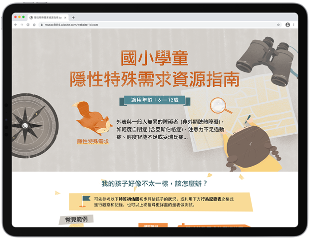
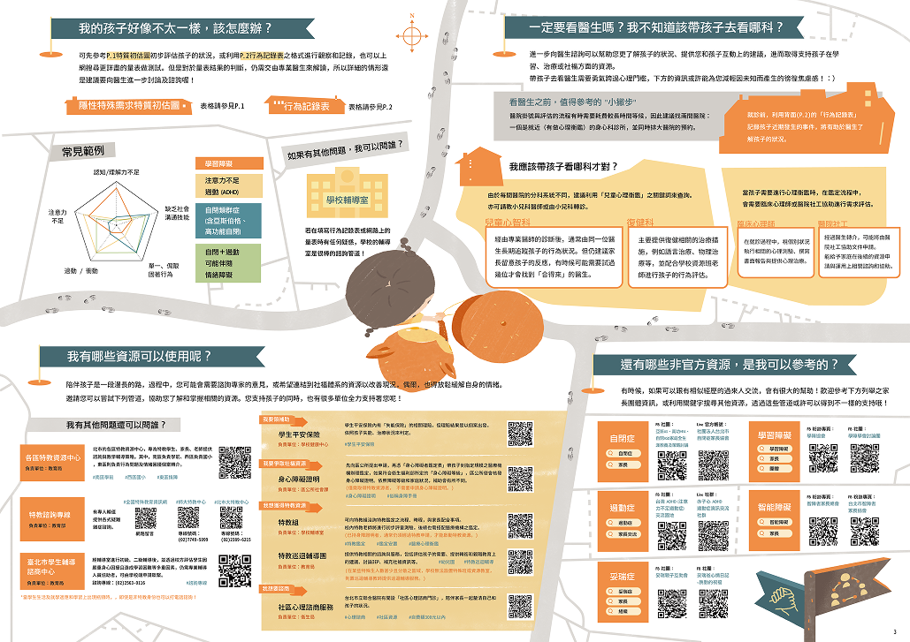
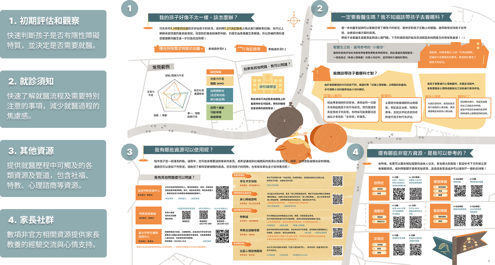
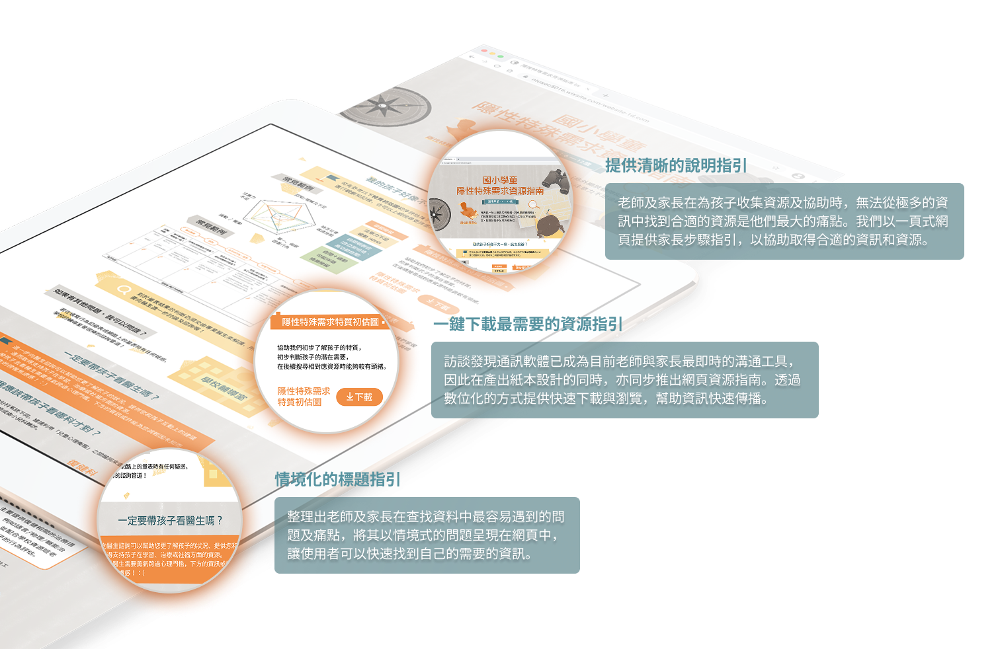

透過社會設計與參與式工作坊，促進隱性特殊生家長與學校教師間的相互理解，設計出紙本與網頁雙版本的資源指南，打造更自在安心的校園學習環境。
Through social design and participatory workshops, we bridged the understanding gap between parents of children with invisible disabilities and their school teachers — producing a dual-format resource guide distributed across 151 Taipei elementary schools.

隱性特殊需求學生（自閉症、過動症、學習障礙等）外表看似正常，但其特質可能影響學業表現，對老師形成挑戰。從家長角度，擔心社會標籤，同時擔心孩子在普通班是否被理解和接納，帶來龐大壓力。
Students with invisible disabilities — autism, ADHD, learning disabilities — appear normal on the outside, but their traits can affect academic performance and challenge teachers. From parents' perspective, concerns about social stigma and whether their child will be understood in a mainstream classroom create enormous pressure.
核心問題是：家長與教師各自面對壓力，卻缺乏一個共同溝通與理解的橋梁。家長不知道有哪些資源、教師不知道如何第一時間回應、不同體系（醫療、教育、心輔）間的差異更加深了困惑。
The core problem: parents and teachers both face pressure in isolation, with no shared bridge for communication and understanding. Parents don't know what resources exist; teachers don't know how to respond in the moment; and fragmentation across systems (medical, educational, counseling) deepens the confusion.
我們透過邀請專家分享、參與議題相關活動，深入了解四個端點的困境：
We engaged deeply with the problem space through expert talks and issue events, mapping challenges across four stakeholder groups:
受霸凌學生不受歡迎行為的改進，與同儕包容力的增加，需要雙向互相調整。
Reducing unwelcome behaviors and increasing peer inclusiveness are mutually reinforcing forces that require adjustment on both sides.
教育局直接介入親師關係存在身份矛盾，讓具相關知識的特教老師擔任橋梁是更好的選擇。
Direct bureau intervention creates role conflicts; special education teachers with relevant knowledge are better positioned as mediators.
老師被期待在學期開始前就「已經準備好」，而家長往往在「完全沒準備」的情況下就必須面對壓力。
Teachers are expected to be ready from day one; parents often face the situation with no preparation at all.
醫療、教育、心輔三個體系之間的差異，讓家長在尋求協助時感到困惑與無所適從。
Differences between medical, educational, and counseling systems leave parents confused and unsupported when seeking help.
在發想階段，我們系統性地拆解家長與老師各自的多元樣貌——因為這兩個族群並不是同質的，設計必須同時服務不同情境下的不同使用者：
In the ideation phase, we systematically mapped the diversity within both parent and teacher groups — because these aren't homogeneous populations, and design must serve different users in different situations:
為了避免設計受限於團隊內部觀點，我們舉辦了方案發想及測試工作坊，邀請醫師、家長、設計師、教師、一般民眾共同發想、參與測試並給予回饋，確保方案能服務複數族群並提高落地可能性。
To avoid solutions constrained by team-internal perspectives, we organized a participatory ideation and testing workshop — inviting physicians, parents, designers, teachers, and general public to co-ideate, test, and give feedback, ensuring solutions could serve diverse groups and have real-world viability.
最終設計成果為紙本與網頁雙版本，兩者各自針對不同的使用情境與接觸時機：
The final design delivered two complementary formats, each optimized for different contexts and touchpoints:
老師可於新生入學時發放，讓家長能自我評估並即早尋求資源。分為四個區塊：
Distributed by teachers at student enrollment, enabling parents to self-assess and seek early intervention. Organized into four sections:
訪談發現通訊軟體已成為老師與家長最即時的溝通工具，因此同步推出網頁版，提供：
Interviews revealed messaging apps are the most immediate communication tool between teachers and parents, prompting a parallel web version offering:

▲ 紙本資源指南完整版面——分為初期評估、就診須知、其他資源、家長社群四個區塊，可於新生入學時由老師發放給家長
▲ Full print resource guide layout — four sections covering early assessment, medical consultation, additional resources, and parent community; distributed by teachers at enrollment

▲ 紙本指南設計說明——每個區塊對應不同的家長使用情境與需求，設計邏輯以「降低資訊焦慮、引導逐步行動」為核心
▲ Print guide design rationale — each section addresses distinct parental use cases, designed around the principle of reducing information anxiety and guiding step-by-step action

▲ 網頁版指南設計說明——以情境化問題為導引、一鍵下載為核心功能，搭配清晰的步驟指引，讓家長能隨時在手機上快速取得所需資源
▲ Web guide design rationale — contextualized questions as entry points, one-click downloads as the core function, with clear step-by-step guidance for parents to quickly access resources on mobile
2022 年成果正式發行後，2023 年收到台南市教育局、2026 年收到臺東縣教育局的來信，接洽製作在地版本——這代表這份指南的價值被持續認可，並成為一個可複製推廣的社會設計模板。
After the 2022 launch, the Tainan City Education Bureau reached out in 2023, and the Taitung County Education Bureau in 2026, both to discuss creating local versions — demonstrating that the guide's value has been continuously recognized, becoming a replicable social design template.
「社會設計的難處不在於找到解法，而在於讓解法真的能被需要它的人接觸到。」
"The challenge of social design isn't finding the solution — it's making sure the solution actually reaches the people who need it."
這個專案讓我第一次認真思考「設計的觸達問題」。一份再好的資源指南，如果家長拿不到、不知道從哪找，就沒有任何意義。「老師在新生入學時發放」這個分發機制，是整個專案最關鍵的設計決策之一——不是設計本身，而是觸達路徑的設計。
This project made me seriously think about "design reachability" for the first time. The best resource guide means nothing if parents can't access it. The distribution mechanism — "teachers distribute at enrollment" — was one of the project's most critical design decisions. It wasn't the design itself, but the design of how it reaches people.
參與式工作坊也讓我看見：當設計過程納入醫師、家長、老師等不同角色時，所產出的方案會更貼近真實需求，也更容易在現有系統中落地。
The participatory workshop also showed me: when the design process includes physicians, parents, and teachers, the resulting solutions better reflect real needs and are more likely to work within existing systems.